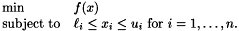
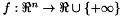
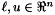

Asynchronous Parallel Pattern Search
Version 4.0.2
Released December 15, 2005
APPSPACK is serial or parallel, derivative-free optimization software for solving nonlinear unconstrained and bound-constrained optimization problems, with possibly noisy and expensive objective functions. The basic optimization problem is of the form

Here  and . (The upper and lower bounds are each optional on an component-by-component basis.) To find a solution of this problem, APPSPACK implements asynchronous parallel pattern search, which uses a pattern of search directions to drive the search and determine new trial points for evaluation. APPSPACK is written in C++ and uses MPI for parallelism. Using APPSPACK to solve optimization problems has the following advantages:
-
Only function values are required for the optimization, so it can be applied to a wide variety of problems. The user need simply provide a program (written in any language such as Fortran, C, C++, Perl, etc.) that can evaluate the objective function at a given point.
-
The target applications are simulation-based optimization problems characterized by a small number of variables (i.e., n < 100) and by expensive objective function evaluations (typically complex simulations that take minutes or hours to run). The procedure for evaluating the objective function does not need to be encapsulated in a subroutine and can, in fact, be an entirely separate program.
-
The code can be run in parallel on a cluster of computers, greatly reducing the total solution time. Parallelism is achieved by assigning the individual function evaluations to different processors. The (optional) asynchronism enables better load balancing.
-
The software is freely available under the terms of the GNU Lesser General Public License.
Key words: optimization, derivative-free, parallel, direct search, pattern search, engineering design
The following people have contributed code to APPSPACK:
-
Tamara G. Kolda, Sandia National Labs, tgkolda@sandia.gov
-
Patricia D. Hough, Sandia National Labs, pdhough@sandia.gov
-
Genetha Gray, Sandia National Labs, gagray@sandia.gov
-
Robert Darwin (Sandia Summer Intern, 2004)
-
Daniel Dunlavy (Sandia Summer Intern, 2001)
-
H. Alton Patrick (Sandia Summer Intern, 2000)
-
Sarah Brown (Sandia Summer Intern, 2000)
Please contact
Tamara G. Kolda.

© Sandia
Corporation | Site
Contact | Privacy
and Security
Generated on Wed Dec 14 18:41:04 2005 for APPSPACK 4.0.2 by
 1.3.8 written by Dimitri van Heesch,
© 1997-2002
1.3.8 written by Dimitri van Heesch,
© 1997-2002